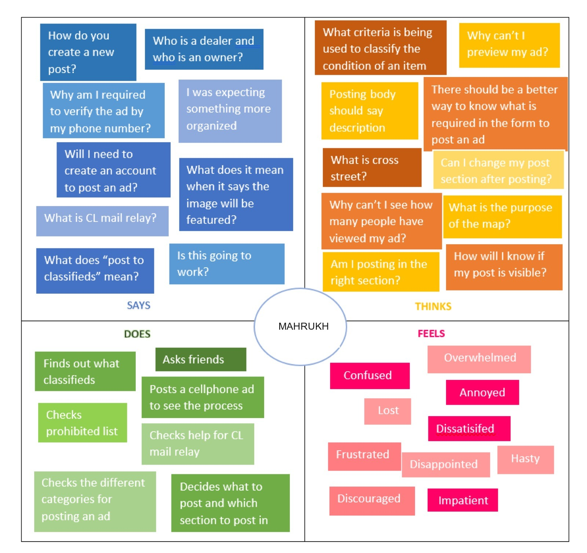
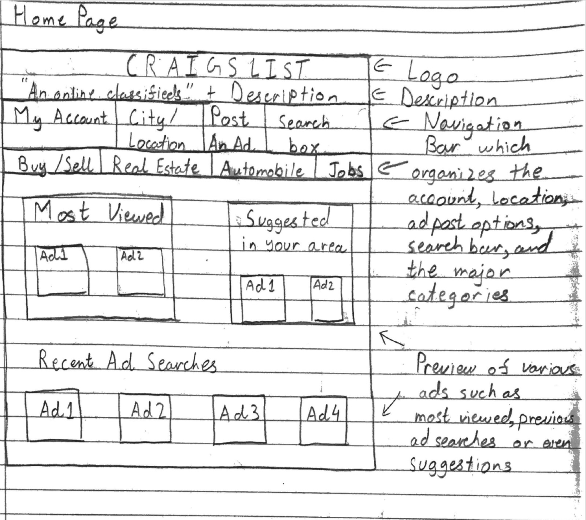
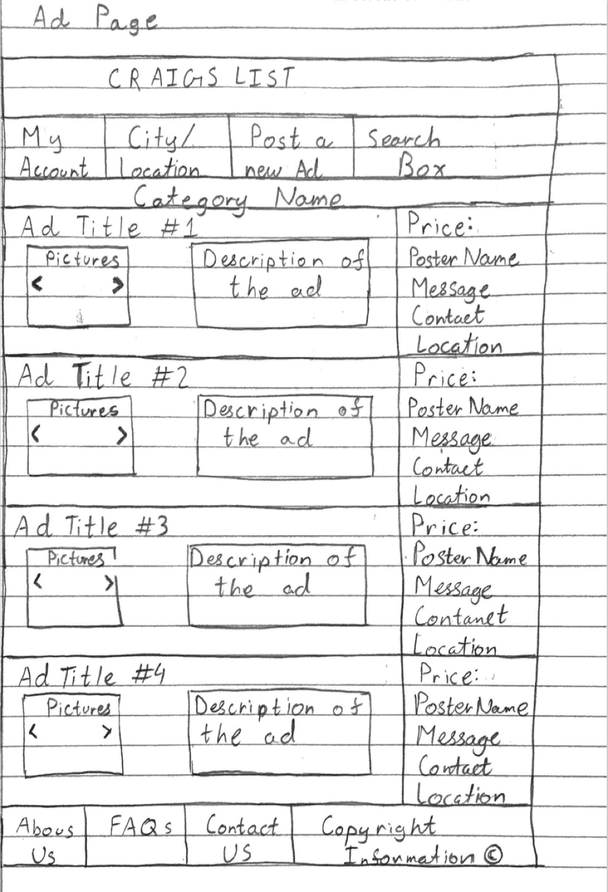
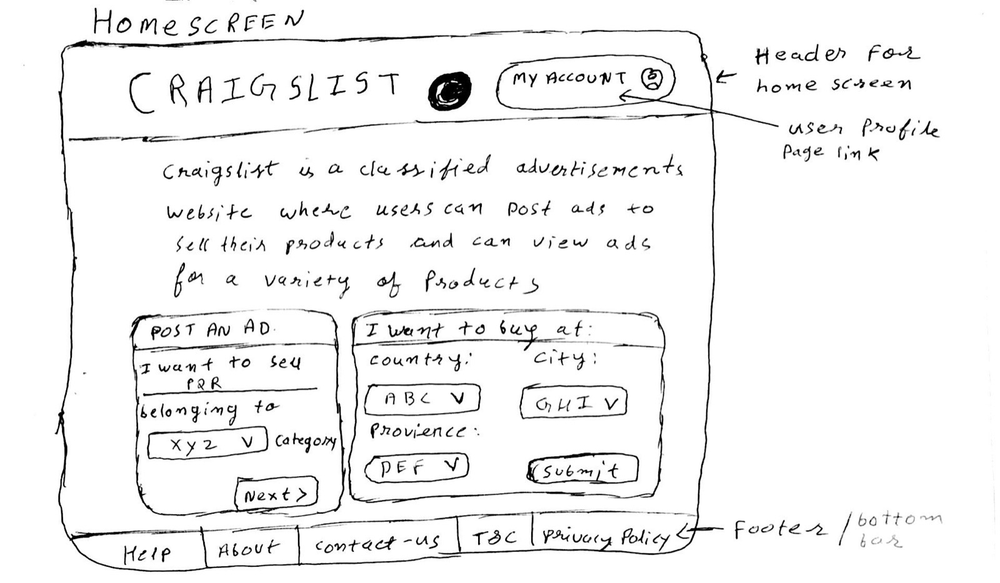
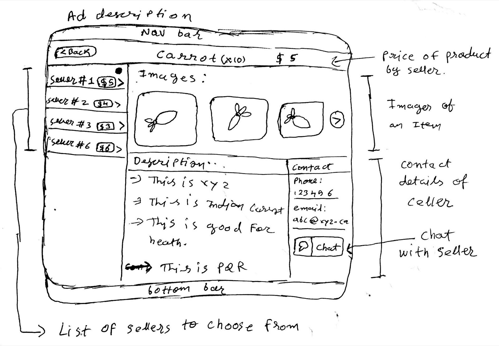

Earlier work · Human-computer interaction coursework · 2019
Redesigning Craigslist with two metaphors and an empathy map
Craigslist serves tens of millions of visits a month with an interface that hasn't fundamentally changed since the nineties. For my HCI course, a four-person team took it apart: activity analysis, user types, empathy maps, scored requirements, and two competing design metaphors prototyped in low fidelity and tested with a timed task questionnaire.
- 4-person teamTwo competing design metaphors
- 4 user typesProfiled with empathy maps
- 12-question evaluationTimed tasks on both prototypes
Craigslist works and is miserable: cluttered, inconsistent, unclear to newcomers.
Analysed two core activities, profiled four user types, built empathy maps and scored requirements, prototyped two metaphors, ran a timed evaluation.
Two lo-fi prototypes with iteration rationale and evaluation findings that fed back into both.
Why Craigslist
Because it works and it's miserable. The site fulfils its purpose at the cost of the experience: cluttered content, mobile controls that distort on rotation, a delete icon used to mean "hide", ambiguous location tags, filters nobody understands, and a "post to classifieds" button that never explains what classifieds are. We backed our own experience with user reviews, and the two loudest complaints were scammers and search that stops at the city boundary.
Analysing the activity before designing anything
We picked two core activities, posting an ad and searching for an item, and for each wrote out the exact steps, then profiled how four kinds of user experience them:
| User | Posting an ad |
|---|---|
| Novice | Scans the whole page to find where posting even begins |
| Expert | Logs in, manages ad history, re-posts to the top of the list |
| Frequent | Finds their way despite the flaws; knows which section is "right" |
| Casual | Fails to grasp the concept and leaves for a friendlier competitor |
Then an empathy map per activity (says, thinks, does, feels), and a requirements list where every item carried an originator, a rationale, and two scores: how satisfied a customer would be if we built it, and how dissatisfied if we didn't. Mine included: mark required versus optional fields clearly; show a viewer count on each ad; replace the vague condition scale (new, like new, excellent, good, fair, salvage) with a defined one; let posters preview their ad in the listing; and give the home page a large header that explains what the site is for. That last one scored five on both axes.
Mental models
People don't learn interfaces from scratch. They bring a model of some system they already understand and map the new thing onto it. When the interface's conceptual model matches that mental model, learning is nearly free; when it doesn't, every action needs to be reasoned out. Don Norman's work on the gap between the designer's model and the user's model is the foundation here.
That's why this project was built around metaphors rather than features. "Reading the classifieds" and "walking a flea market" are models most people already carry. Each one predicted a different layout, a different ordering of results, and a different set of things users would expect to be able to do, and each prototype inherited those expectations for free.
Norman, D. A. (1983). Some observations on mental models. In Gentner & Stevens (Eds.), Mental Models. · Johnson-Laird, P. N. (1983). Mental Models.
Two metaphors, two prototypes

Newspaper metaphor: home page, iterated
Newspaper metaphor: ad page
Flea market metaphor: pick a location first
Flea market metaphor: one item, many sellers, chat instead of contact detailsReading the classifieds
My metaphor. A newspaper's classifieds section is instructing and manipulating at the same time: you flip to a section, scan categories, pick one, read the ads in columns, and contact the poster. The lo-fi prototype kept what newspapers do well (a large, clear "post an ad" button consistent with Fitts's law; numbered, bolded, date-ordered ads in a grid) and the critique surfaced what they don't: unorganised categories, one image per ad, no poster name, cramped and colourless.
The iteration reorganised categories into most viewed, suggested, and recent searches; moved post, location, account, and search into a single navigation bar; enlarged ads and reduced how many fit a page; added image arrows, a poster name, a viewer count, and colour. The scenario that drove it: grandparents shopping for a first car who couldn't filter by make, model, or year range and would give up.
Visiting a flea market
The second team's metaphor started from how people actually shop a market: pick a market by location and type, look for offers first, then look for the lowest price, move stall to stall, bargain. That predicted a location step before categories, offers surfaced up front, lowest price first, the same item shown across multiple sellers, and a chat feature so buyers don't hand strangers their contact details. Its own critique: filters were hard to introduce, the responsive version suffered, and getting back to categories from an item took too many steps. Tabs for "highlights" were dropped because a tabbed view lets users never visit the second tab.
Evaluating it
I wrote the evaluation questionnaire: twelve questions covering whether a naive user could understand the purpose, find login and location, find categories and the post button, navigate an ad page, and judge whether ads carried enough detail, with task times recorded on both prototypes. The feedback was direct: the purpose was now clear and posting was obvious, but login was still hard to find and too many same-sized buttons made the location control disappear. Both went back into the design.
What this taught me
- Profile users before you design for them. The novice and the casual user fail in different places, and only one of them ever comes back.
- Score requirements on both axes. Satisfaction if built and dissatisfaction if not are different numbers, and the second one finds the things you can't skip.
- Pick a metaphor and let it make decisions for you. The flea market decided result ordering. The newspaper decided layout. Neither team had to argue about those.